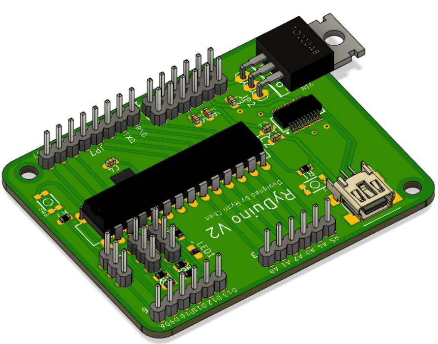
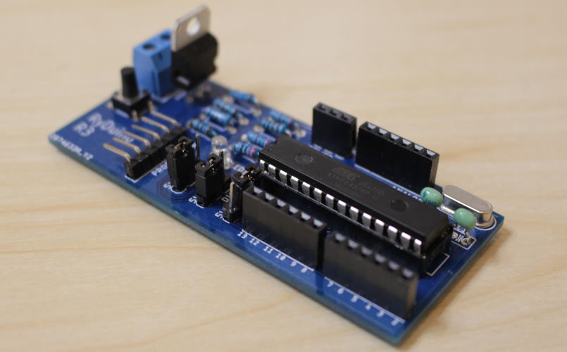

RyDuino Microcontroller
After using many different microcontrollers through the years, I’ve developed two microcontroller boards based on my own personal preferences and experiences
that I've called the RyDuino (a portmanteau of Ryan and Arduino). Specifically, many of the major features are designed to replace things that I commonly have to use breadboards for.
Currently, they are both based on the ATmega328P in a DIP package because I like the option of replacing chips if they get damaged. However, I plan on making another version based on the ESP32 chip.
Version 2

My second, upgraded version with these following features:
- Micro USB connection with FTDI for USB to Serial conversion
- Built-in 6 pin power rails since this is something that I commonly use breadboards for
- Can supply both 5V and 3.3V
- High current 1.5A voltage regulator, compared to 0.5A on many other controllers
- One built-in push button since this is something that I commonly build on breadboards
- Screw terminal for power input to make it easier to plug in different connections
- Built-in 3.3V or 5V logic voltage switchers for two pins since this is something that I commonly build on breadboards
Version 1

My first version with these following features:
- High current 1.5A voltage regulator, compared to 0.5A on many other controllers
- Screw terminal for power input to make it easier to plug in different connections
- Built-in 3.3V and 5V output voltage switchers for 3 pins since this is something that I commonly build on breadboards
Project Pages
Includes documentation, code, and schematics. Click either of these links: